Next: Nonsolenoidal fields
Up: Vector Fields in a
Previous: Vector Fields in a
Contents
The fundamental lemma is due to Chadwick and Trowbridge
(1967).
Lemma 1 (Chadwick-Trowbridge)
Let

be a vector field possessing partial derivatives of order up
to two which are Hölder continuous on
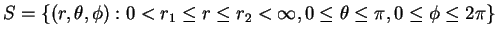.
Then if, in addition,
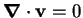 on

, there are scalars
![$\mbox{$\mathcal P$}[\mathbf{v}]$](img49.png)
and
![$\mbox{$\mathcal T$}[\mathbf{v}]$](img70.png)
such that
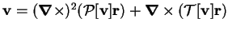
on
.
Vectors of the form
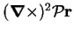 and
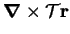 are called poloidal and toroidal,
respectively.
It has been shown by Backus (1986) that the lemma can be extended from
spherical annuli to spheres. The scalars can be obtained as the regular
solutions of
where
(Moffatt 1978, p. 18).
The operator
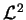 is the surface
Laplacian for the unit sphere (Aris 1989, pp. 196-7, 222).
Its eigenfunctions are the spherical harmonics:
| 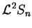 |
 |
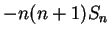 |
(B.4) |
| 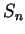 |
 |
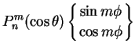 |
(B.5) |
(Lamb 1932, pp. 112-117).
The
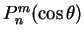 are given by
for integer  and
and  (Lamb 1932, pp. 114-7).
The first few
(Lamb 1932, pp. 114-7).
The first few  are listed in table B.1.
are listed in table B.1.
Table B.1:
The first few 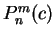. Note that 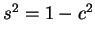.
| |
|
|
0 |
1 |
2 |
3 |
4 |
| 0 |
1 |
-- |
-- |
-- |
-- |
| 1 |
 |
 |
-- |
-- |
-- |
| 2 |
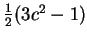 |
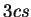 |
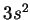 |
-- |
-- |
| 3 |
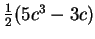 |
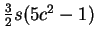 |
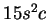 |
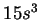 |
-- |
| 4 |
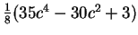 |
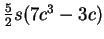 |
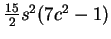 |
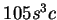 |
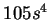 |
|
An immediate and extremely useful consequence of
(B.4) is
The spherical components of poloidal and toroidal fields are:
| 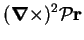 |
|
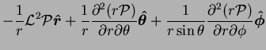 |
(B.8) |
|
|
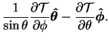 |
(B.9) |
Clearly, arbitrary functions of  may be added to
or
without affecting
may be added to
or
without affecting
 or
or
 (Moffatt 1978, p. 19).
(Moffatt 1978, p. 19).
Next: Nonsolenoidal fields
Up: Vector Fields in a
Previous: Vector Fields in a
Contents
Geordie McBain
2001-01-27